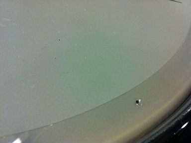

以前 twitter でお気に入りの印をいれた tweet を記録するなど。
@ACT_DRUM: ご来店頂いた枝川さんにリングミュートに使える隠し技を伝授していただきました！なんとリングにドライバーを押し当て突起を作ることでリングとヘッドの間に空間を作り、ミュートのかけ過ぎによる音詰りを解消することができます！コレはスゴイ！ 2012.05.01 21:24

@ACT_DRUM: この突起付リングミュートの良いところは、突起が出ている面と裏側の突起なしの面でミュートの掛け方が変えられるところにあります！8～10個程の突起をリングの気持ち内側に作るのがポイントだそうです！ 神保彰さんも愛用されているそうですよ！ぜひトライしてみて下さい！ 2012.05.01 21:25
ドラムテック枝川さんの技が光ります。